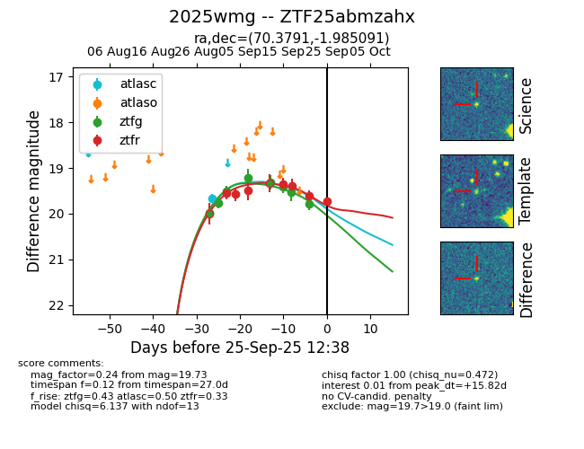
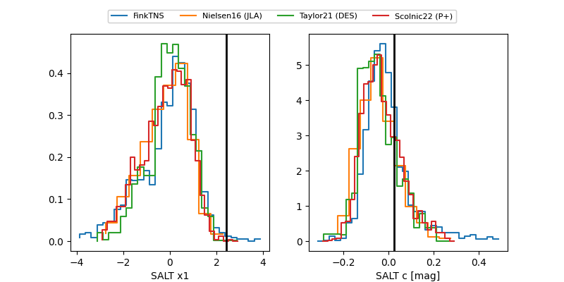

FINK: ZTF25abmzahx
Lasair: ZTF25abmzahx
ALeRCE: ZTF25abmzahx
TNS: 2025wmg
YSE: 2025wmg
ZTF25abmzahx (ztf,fink)
2025wmg (tns,yse)
equatorial (ra, dec) = (70.3791,-1.98509)
galactic (l, b) = (198.6960,-29.56701)


last atlasc=19.66, ztfg=19.79, ztfr=19.73
1 atlasc, 8 ztfg, 7 ztfr detections